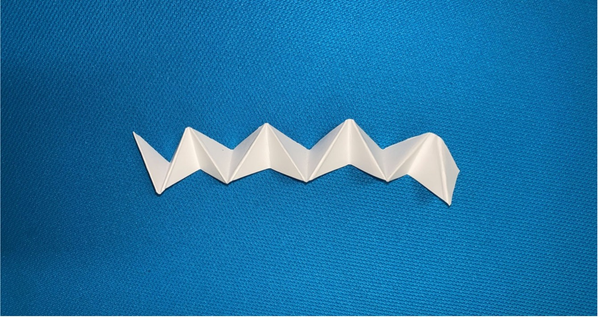

A1: Laser Cut Press Fit Construction Kit
By Jessica Hord
I have not been able to laser cut yet with the laser cutters being down. An image of the final piece will be shown below.

Documentation
Ideation
The first thing I did in the ideation process was break out some paper, a pencil, and scissors. I folded the paper a few different ways, created different kinds of shapes, and tried to get inspiration from that. One of the things I created when playing around with the paper was a bunch of triangles folded onto themselves, pictured below.

After that, I thought about how those triangles were exact halves of a square, and that it might be interesting to play with that. So, I cut out the larger pieces pictured below. I also created a square connector piece since there would need to be some way to connect the pieces.
After I had all the pieces, I started messing around with them to see where the pieces could potentially fit together, how deep slots should be, and more. I then created an Illustrator version of the pieces, printed them out, and tested a final paper prototype of how the pieces might fit together. I made revisions on where I wanted each slot, how many slots, and more based on the final paper prototype.


Design
After I had settled on the shapes through paper prototyping, I measured my cardboard with calipers. The calipers showed that the cardboard was exactly 4mm thick. The angle of the image is a bit confusing, but the calipers are clamped down just tight enough to measure and not crush the cardboard.
I updated my illustrator file based on my revisions to my paper prototype, making sure to be exact about the symmetry of the triangles and size the slots for the cardboard. I added more slots to the triangle pieces and made the connector piece a circle.

I then made individual files for the triangle and rectangle connector shapes, imported them into Rhino, and made the shapes 3D based on the size of the cardboard.
I spent some time trying to build a 3D model in Rhino of how the pieces would fit together, but it was incredibly difficult trying to understand how to flip and rotate things with the limitations in the system and I didn’t get very far. I figured my time was probably best spent messing around with the laser cut pieces.
Implementation
I have not had a chance to laser cut my pieces yet, due to the various technical issues they were having over the weekend. I am planning to visit the mill on Wednesday, 10/12 to do so.
Source Files
Single triangle designSingle circle connector design
Full laser cut AI file
Rhino file